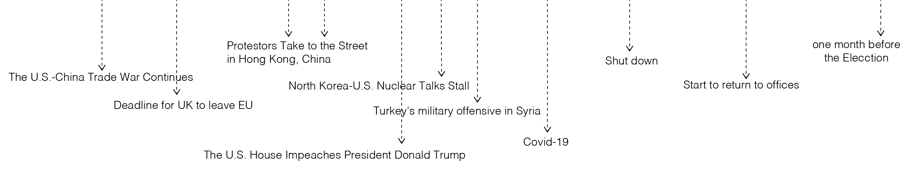

<!DOCTYPE html>
<html lang="en">

<head>
    <meta charset="UTF-8">
    <meta name="viewport" content="width=device-width, initial-scale=1.0">
    <title>Document</title>
    <script src="https://cdn.jsdelivr.net/npm/chart.js@2.9.4/dist/Chart.min.js"></script>

</head>

<body>
    <canvas id="chart" width="100" height="48"></canvas>
    <!--  -->

    <script>
        var xlabels = [];
        const ytemps = [];
        const ftemps = [];
        chartIt();
        // get the data

        getData();
        async function getData() {
            const response = await fetch('data_new.csv');
            const data = await response.text();
            // console.log(data);

            const table = data.split('\n').slice(1);
            // console.log(table);
            table.forEach(elt => {
                const columns = elt.split(',');
                console.log(columns);
                const year = columns[0];

                xlabels.push(year);
                const temp = columns[1];

                ytemps.push(parseFloat(temp));

                console.log(year, temp);
            });
        }

        // Chart.JS
        async function chartIt() {
            await getData();
            var ctx = document.getElementById('chart').getContext('2d');

            var myChart = new Chart(ctx, {
                type: 'line',
                fill: false,

                data: {
                    labels: xlabels,
                    datasets: [{
                        label: 'Number of articles mentioned North Korean & Nuclear',
                        data: ytemps,
                        backgroundColor: [
                            'rgba(255, 99, 132, 0.2)',
                        ],
                        borderWidth: 1
                    }]
                },
                // options: {
                //     tooltips: {
                //         callbacks: {
                //             label: function(tooltipItem, data) {
                //                 var label = ftemps;
                //                 for(var i=0;i<ftemps.length;i++){
                //                     var tt=ftemps[i];

                //                 }
                //                 return tt;

                //             },

                //             labelColor: function(tooltipItem, chart) {
                //                 return {
                //                     borderColor: 'rgb(0, 255, 0)',
                //                     backgroundColor: 'rgb(0, 255, 0)'
                //                 };
                //             },
                //             labelTextColor: function(tooltipItem, chart) {
                //                 return '#f5e9f4';
                //             }

                //         }
                //     }
                // }


                // }
            });
        }
    </script>
</body>

</html>